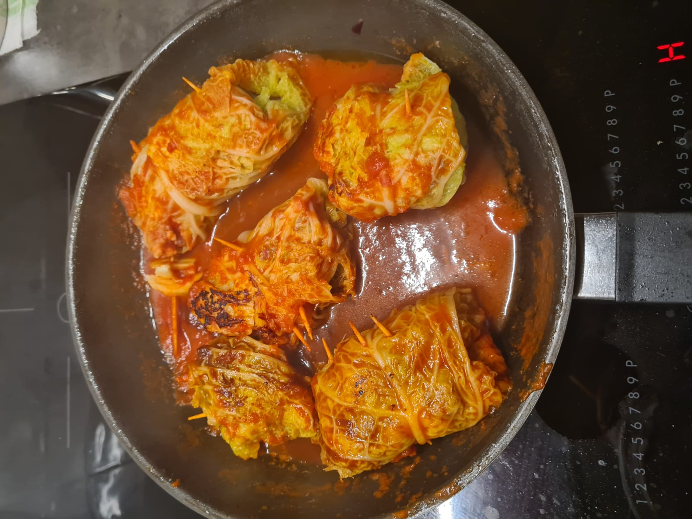

Involtini di verza e salsiccia

Ingredienti
- 250g salsiccia
- 4-5 foglie di verza
- 100g di provola affumicata
- 2-3 cucchiai di pane grattugiato
- 2-3 cucchiai di parmigiano reggiano
- 1 uovo
- 400g di passata di pomodoro
- Olio q.b.
- Sale q.b.
- Pepe q.b.
Procedimento
- Lavare e pulire le foglie di verza, sbollentarle per circa 5 minuti in acqua bollente salata.
- Scolarle con pinze da cucina e trasferirle su carta assorbente a raffreddare.
- Privare la salsiccia del budello e rosolarla in padella antiaderente con un filo d’olio, sgranandola.
- Una volta fredda, metterla in una ciotola con l’uovo sbattuto, il pangrattato e il parmigiano. Salare, pepare e mescolare.
- Disporre le foglie di verza su un piano, tagliarle a metà e rimuovere la costa centrale.
- Mettere un po’ di ripieno al centro della foglia e arrotolare, fermando con uno stuzzicadente.
- Nella stessa padella della salsiccia, aggiungere olio e versare la passata. Inserire gli involtini, coprire e cuocere per 10-15 minuti a fuoco medio.
- Trasferire nel piatto, condire con un filo d’olio a crudo e il sugo di cottura.